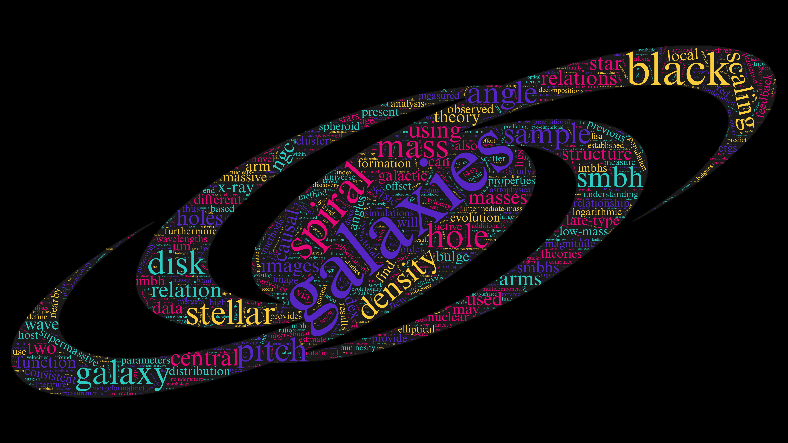
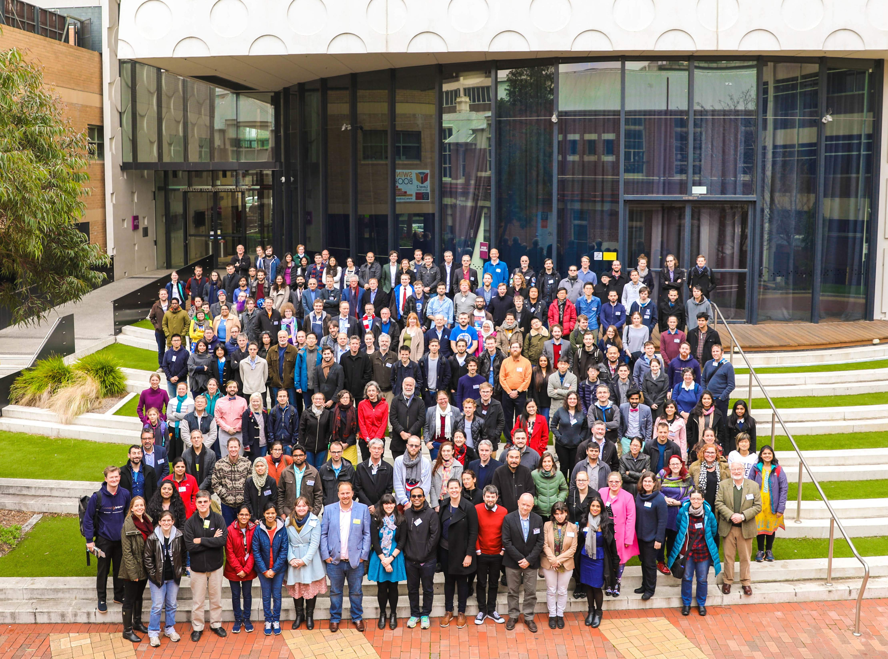
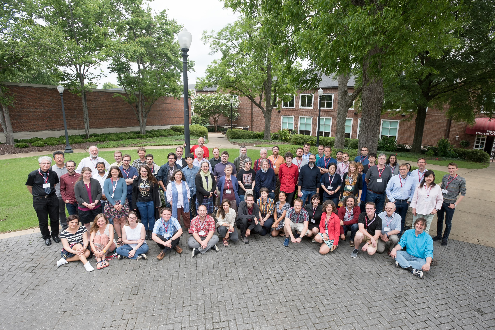
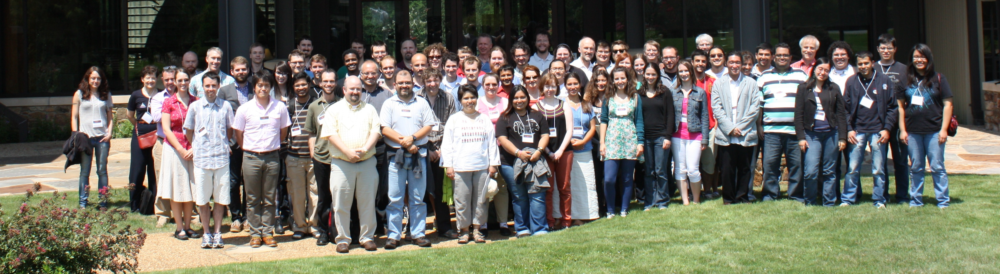

Research

Image by James Josephides.
Online Repositories, Metrics, and Visualizations
- SAO/NASA Astrophysics Data System (ADS Bumblebee)
- SAO/NASA Astrophysics Data System (ADS Classic)
- Google Scholar
- arXiv.org > astro-ph
- Paperscape Map → search on "?author B.L.Davis"
- My Paperscape
- ResearchGate
- Astrophysics Source Code Library
 orcid.org/0000-0002-4306-5950
orcid.org/0000-0002-4306-5950Peer-Reviewed Publications

- Davis, B. L., Graham, A. W., & Cameron, E., "Black Hole Mass Scaling Relations for Spiral Galaxies. I. \(M_{\rm BH}\)-\(M_{\rm *,sph}\)," accepted for publication by The Astrophysical Journal on November 13, 2018.
- Graham, A. W., Soria, R. & Davis, B. L., "Expected intermediate mass black holes in the Virgo cluster. II. Late-type galaxies," Monthly Notices of the Royal Astronomical Society, December 21, 2018.
- Davis, B. L., Graham, A. W., & Cameron, E., "Black Hole Mass Scaling Relations for Spiral Galaxies. II. \(M_{\rm BH}\)-\(M_{\rm *,tot}\) and \(M_{\rm BH}\)-\(M_{\rm *,disk}\)," The Astrophysical Journal, 869, 113, December 17, 2018.
- Davis, B. L., Graham, A. W., & Seigar, M. S., "Updating the (Supermassive Black Hole Mass) - (Spiral Arm Pitch Angle) Relation: A Strong Correlation for Galaxies with Pseudobulges," Monthly Notices of the Royal Astronomical Society, Volume 471, Issue 2, Pages 2187-2203, October 21, 2017.
- Koliopanos, F., Ciambur, B. C., Graham, A. W., Webb, N. A., Coriat, M., Mutlu-Pakdil, B., Davis, B. L., Godet, O., Barret, D., & Seigar, M. S., "Searching for Intermediate Mass Black Holes in Dwarf Galaxies with Low Luminosity AGN: A Multiple-method Approach," Astronomy & Astrophysics, Volume 601, A20, December 2016.
- Mutlu-Pakdil, B., Seigar, M. S., & Davis, B. L., "The Local Black Hole Mass Function Derived from the \(M_{\rm BH}\)-\(P\) and the \(M_{\rm BH}\)-\(n\) Relations," The Astrophysical Journal, 830, 117, October 2016.
- Pour-Imani, H., Kennefick, D., Kennefick, J., Davis, B. L., Shields, D. W., & Shameer Abdeen, M., "Strong Evidence for the Density-wave Theory of Spiral Structure in Disk Galaxies," The Astrophysical Journal Letters, 827, L2, August 2016.
- Davis, B. L., Kennefick, D., Kennefick, J., Westfall, K. B., Shields, D. W., Flatman, R., Hartley, M. T., Berrier, J. C., Martinsson, T. P. K., & Swaters, R. A., "A Fundamental Plane of Spiral Structure in Disk Galaxies, The Astrophysical Journal Letters, 802, L13, March 2015.
- Seigar, M. S., Davis, B. L., Berrier, J. C., & Kennefick, D., "Constraining Dark Matter Halo Profiles and Galaxy Formation Models Using Spiral Arm Morphology. II. Dark and Stellar Mass Concentrations from 13 Nearby Face-On Galaxies", The Astrophysical Journal, 795, 90, November 2014.
- Davis, B. L., Berrier, J. C., Johns, L., Shields, D. W., Hartley, M. T., Kennefick, D., Kennefick, J., Seigar, M. S., & Lacy, C. H. S., "The Black Hole Mass Function Derived from Local Spiral Galaxies," The Astrophysical Journal, 789, 124, July 2014.
- Berrier, J. C., Davis, B. L., Kennefick, D. Kennefick, J., Seigar, M. S., Barrows, R. S., Hartley, M. T., Shields, D. W., Bentz, M. C., & Lacy, C. H. S., "Further Evidence for a Supermassive Black Hole - Pitch Angle Relation," The Astrophysical Journal, 769, 132, June 2013.
- Davis, B. L., Berrier, J. C., Shields, D. W., Kennefick, J., Kennefick, D., Seigar, M. S., Lacy, C. H. S., & Puerari I., "Measurement of Galactic Logarithmic Spiral Arm Pitch Angle Using Two-Dimensional Fast Fourier Transform Decomposition," The Astrophysical Journal Supplement Series, 199, 33, April 2012.
Ph.D. Dissertation
Davis, B. L., "Logarithmic Spiral Arm Pitch Angle of Spiral Galaxies: Measurement and Relationship to Galactic Structure and Nuclear Supermassive Black Hole Mass," University of Arkansas, May 2015.Other Papers
- Shields, D. W., Boe, B., Pfountz, C., Davis, B. L., Hartley, M., Pour Imani, H., Slade, Z., Kennefick, D., & Kennefick, J., "Spirality: A Novel Way to Measure Spiral Arm Pitch Angle," arXiv:1511.06365, November 2015.
- Davis, B. L., Berrier, J. C., Johns, L., Shields, D. W., Kennefick, D., Kennefick, J., Seigar, M. S., & Lacy, C. H. S., "The Black Hole Mass Function Derived from Local Spiral Galaxies," Structure and Dynamics of Disk Galaxies. Proceedings of the Conference held 12-16 August, 2013 at the Winthrop Rockefeller Institute, Petit Jean Mountain, Arkansas, USA. Edited by M. S. Seigar and P. Treuthardt. ASP Conference Series, Vol. 480, p.2 04, March 2014.
- Davis, B. L., Chevrier, V. F., Altheide, T. S., & Swaffar, C., "Reflectance Spectra of Low-Temperature Chloride and Perchlorate Hydrates and Their Relevance to the Martian Surface," Lunar and Planetary Institute Science Conference Abstracts, Vol. 40, 1387, March 2009.
Acknowledgments
- Durré, M. & Mould, J., "The AGN Ionization Cones of NGC 5728. II. Kinematics," The Astrophysical Journal, 870, 1, January 1, 2019.
- Mutlu-Pakdil, B., Seigar, M. S., Hewitt, I. B., Treuthardt, P., Berrier, J. C., & Koval, L. E., "The Illustris simulation: supermassive black hole-galaxy connection beyond the bulge," Monthly Notices of the Royal Astronomical Society, Volume 474, Issue 2, p. 2594-2606, February 2018.
- Yuan, T., Richard, J., Gupta, A., Federrath, C, Sharma, S., Groves, B. A., Kewley, L. J., Cen, R., Birnboim, Y., & Fisher, D. B., "The Most Ancient Spiral Galaxy: A 2.6-Gyr-old Disk with a Tranquil Velocity Field," The Astrophysical Journal, 850, 61, November 20, 2017.
Magazine Article
Davis, B. L., "How You Can Weigh Black Holes," Australasian Science, (Volume 38 | Number 5), pp.14-16, Sept/Oct 2017.Software
- Spirality →

- 2DFFT →

- P2DFFT
- SpArcFiRe Web Interface
- ISOFIT
- Profiler
Erdős Number = 6
- Benjamin L. Davis (6) ↔ Daniel J. Kennefick (5) ↔ Niall Ó Murchadha (4) ↔ Demetrios Christodoulou (3) ↔ Shing-Tung Yau (2) ↔ Fan Chung (1) ↔ Paul Erdős (0).
- Verified via the American Mathematical Society.
Conference Photos


